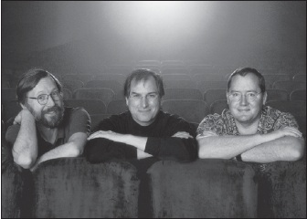

Pixar
Teknoloji Sanatla Buluşuyor

Ed Catmull, Steve Jobs ve John Lasseter, 1999
Lucasfilm’in Bilgisayar Bölümü
Jobs 1985’in başında, Apple’daki konumu sallantıya girince, eskiden Xerox PARC’ta çalışan ve sonra Apple asosiye üyesi olan Alan Kay’le yürüyüşe çıkmıştı. Kay Jobs’ın yaratıcılıkla teknolojinin kesişimiyle ilgilendiğini bildiğinden bir arkadaşını, George Lucas’ın film stüdyosunun bilgisayar bölümünü yöneten Ed Catmull’ı görmeye gitmelerini önerdi. Limuzin kiralayıp Marin County’e, Lucas’ın Skywalker Çiftliği’ne, Catmull ile küçük bilgisayar ekibinin çalıştığı yere gittiler. “Çok etkilenmiştim ve geri dönünce Sculley’yi orayı Apple’a alması için ikna etmeye çalıştım,” diye anımsıyordu Jobs. “Ama Apple yöneticileri ilgilenmediler, hem zaten beni kovmakla meşguldüler.”
Lucasfilm Bilgisayar Bölümü iki ana kısımdan oluşuyordu: Canlı film çekimlerini dijitalleştirip etkileyici özel efektlerle donatabilecek bir bilgisayar geliştiriyordu ve ayrıca kısa animasyon filmler üreten bir bilgisayar animatörleri grubu vardı (André ile Wally B.’nin Maceraları adlı filmleri, 1984’teki bir ticaret sergisinde gösterilince yönetmeni John Lasseter’ı meşhur etmişti.) İlk Yıldız Savaşları üçlemesini tamamlamış olan Lucas çekişmeli bir boşanma evresindeydi ve bölümü satması gerekiyordu. Catmull’a bir an önce bir alıcı bulmasını söyledi.
1985 sonbaharında, birkaç potansiyel alıcının caymasından sonra, Catmull’la bölümün diğer kurucusu Alvy Ram Smith bölümü bizzat satın almak için yatırımcılar aramaya karar verdiler. Bu yüzden Jobs’ı arayıp yeni bir görüşme ayarladılar ve onun Woodside’daki evine gittiler. Jobs Sculley’nin hainliğinden ve aptallığından bir süre bahsettikten sonra, Lucasfilm bölümünü bizzat satın almayı önerdi. Catmull’la Smith buna itiraz ettiler. Aradıkları büyük bir yatırımdı, yeni bir sahip değil. Ama kısa sürede bir orta yol buldular: Jobs bölümün çoğunu satın alıp yönetim kurulu başkanı olabilir, ama idareyi Catmull’la Smith’e bırakabilirdi.
“O bölümü satın almak istedim çünkü bilgisayar grafiklerine cidden düşkündüm,” diye anımsıyordu Jobs sonradan. “Lucasfilm’in bilgisayar ekibini görünce, sanatla teknolojiyi birleştirmekte (ki hep ilgilendiğim şeydir) başkalarından çok ileride olduklarını anladım.” Jobs bilgisayarların birkaç yıl içinde yüz kat güçleneceklerini biliyordu ve böylece animasyon sanatında ve gerçekçi 3-D grafiklerde büyük ilerlemeler kaydedileceğine inanıyordu. “Lucas’ın ekibi öyle çok işlemci gücü gerektiren sorunlarla ilgileniyordu ki, tarihin onlardan yana olacağını fark ettim. Öyle vektörleri severim.”
Jobs Lucas’a 5 milyon dolar ödemeyi ve bölümü bağımsız bir şirkete dönüştürmek için de 5 milyon dolarlık yatırım yapmayı teklif etti. Lucas’ın istediğinden çok daha azıydı bu, ama zamanlama iyiydi. Pazarlık yapmaya karar verdiler. Lucasfilm’in CFO’su Jobs’ı küstah ve huysuz buldu, dolayısıyla topluca görüşmenin vakti gelince Catmull’a “Dizginleri ele almalıyız,” dedi. Plan şuydu: Jobs da dahil olmak üzere herkes bir odada toplanacaktı, ama CFO birkaç dakika geç gelecekti, toplantının başkanının kendisi olduğunu göstermek için. “Ama tuhaf bir şey oldu,” diye anımsıyor Catmull. “Steve CFO’yu beklemeden toplantıyı zamanında başlattı ve CFO geldiğinde Steve dizginleri ele almıştı bile.”
Jobs, George Lucas’la tek bir kez görüştü; Lucas onu bölümdeki insanların bilgisayar üretmekten çok animasyon film yapmakla ilgilendikleri konusunda uyardı. “Bu adamların gözü animasyondan başka bir şey görmez,” dedi Lucas ona. Lucas sonradan şöyle anımsayacaktı: “Ed ile John’ın temel hedefinin bu olduğu konusunda Steve’i uyardım. Bence şirketi satın almasının sebebi kendisinin de hedefinin bu olmasıydı.”
Nihai anlaşmaya Ocak 1986’da varıldı. Jobs 10 milyon dolarlık yatırımı karşılığında şirketin %70’ine sahip olacaktı; hisselerin geri kalanıysa Ed Catmull’a, Alvy Ray Smith’e ve resepsiyon görevlisi de dahil olmak üzere diğer 38 kurucu personele dağıtılacaktı. Bölümün en önemli donanımı Pixar Image Computer’dı ve şirket ismini bu bilgisayardan aldı. Son mesele imzaların nerede atılacağıydı: Jobs bu işin NeXT’teki ofisinde yapılmasını istiyordu, Lucasfilm çalışanlarıysa Skywalker Çiftliği’nde yapılmasını istiyorlardı. Sonunda uzlaşıp, San Francisco’daki bir hukuk firmasında buluştular.
Jobs, Catmull’la Smith’in Pixar’ı istedikleri gibi yönetmelerine bir süre pek karışmadan izin verdi. Aşağı yukarı ayda bir kez, genellikle NeXT merkezinde yönetim kurulu toplantısı yapıyorlardı ve Jobs temelde finans ve stratejide odaklanıyordu. Yine de kişiliği ve yönetme içgüdüsü sebebiyle kısa sürede daha etkin, Catmull’la Smith’in umduklarından kesinlikle daha etkin bir rol oynamaya başladı. Pixar’ın donanımıyla yazılımını değiştirmek konusunda bazı fikirler önerdi –bazıları makul, bazılarıysa çılgıncaydı–. Arada sırada uğradığı Pixar ofislerinde ilham kaynağı oldu. “Bir Güneyli Baptist olarak yetiştim; hipnotize edici ama ahlâksız vaizler uyanış toplantıları düzenliyorlardı,” diyor Alvy Ray Smith. “Steve’de de aynı şey var: Dilin gücü ve insanları yakalamakta kullandığı sözcükler ağı. Bunun farkında olduğumuzdan, yönetim kurulu toplantılarında birisi Steve’in çarpıtma sahasına kapıldığında ve gerçekliğe geri döndürülmesi gerektiğinde sinyal vermeyi –burun kaşımayı veya kulak çekmeyi– kararlaştırdık.”
Jobs donanımla yazılımı entegre etmenin değerini hep takdir etmişti ve Pixar’ın Image Computer’ıyla ve render yazılımıyla yaptığı buydu. Hatta Pixar üçüncü bir öğeyi de katmıştı: Animasyon filmler ve grafikler gibi hoş içerikler de üretiyordu. Bu üç öğe de Jobs’ın sanatçı yaratıcılığı ve teknoloji düşkünlüğünden olumlu etkilendi. “Silikon Vadisi insanları yaratıcı Hollywood tiplerine saygı duymazlar, Hollywood insanları da teknoloji insanlarının kiralanacak ve asla görüşmek zorunda kalınmayacak kişiler olduklarını düşünürler,” dedi Jobs sonradan. “Pixar iki kültüre de saygı duyulan tek yerdi.”
Başlangıçta gelirin donanımdan sağlanması gerekiyordu. Pixar Image Computer 125.000 dolara satılıyordu. Başlıca müşteriler animatörler ve grafik tasarımcılardı, ama makine kısa süre sonra tıp endüstrisinde (bilgisayarlı tomografi verileri üç boyutlu grafikler şeklinde renderlenebiliyordu) ve istihbarat alanlarında (keşif uçuşlarından ve uydulardan gelen verilerin renderlenmesinde) da kullanılmaya başlandı. Ulusal Güvenlik Ajansı’na yapılan satışlar sebebiyle Jobs güvenlik izni almak zorunda kaldı; onu incelemekle görevlendirilen FBI ajanı eğlenmiş olsa gerek. Bir Pixar yöneticisinin söylediğine göre soruşturmacı bir keresinde Jobs’a uyuşturucu kullanımıyla ilgili sorular sormaya başladı ve Jobs hiç çekinmeden, dürüstçe yanıt verdi. “Onu son kullanışımda...” diyordu bazen veya o uyuşturucuyu hiç kullanmadığını söylüyordu.
Jobs Pixar’ı bilgisayarın 30.000 dolar civarına satılacak düşük maliyetli bir versiyonunu üretmeye yöneltti. Tasarımı Hartmut Esslinger’in yapmasında diretti, Catmull’la Smith’in onun çok pahalı olduğunu söylemelerine karşın. Yeni bilgisayar sonunda orijinal Pixar Image Computer’a benzedi, yani ortasında yuvarlak bir çukur bulunan bir küptü, ama Esslinger’in alametifarikası olan yivlere sahipti.
Jobs Pixar’ın bilgisayarlarını tüketici pazarına satmak istediğinden, büyük şehirlerde Pixar satış ofisleri açtı –tasarımlarını bizzat onaylayarak–; teorisi yaratıcı insanların makineyi kullanmanın çeşitli yollarını kısa sürede keşfedecekleriydi. “Bence insanlar yaratıcı hayvanlar ve araç gereçleri mucitlerinin hayal bile etmediği şekillerde kullanmanın yeni, zekice yollarını bulacaklar hep,” dedi sonradan. “Pixar bilgisayara da bunun olacağını düşünüyordum, tıpkı Mac’e olduğu gibi.” Ama sıradan müşteriler o makineleri pek benimsemediler. Pixar bilgisayarlar fazla pahalıydı ve onlara uygun yazılım uygulamalarının sayısı azdı.
Pixar’ın 3-D grafikler ve görüntüler üreten Reyes (Renders Everything You Ever Saw[22]) adlı bir render programı vardı. Jobs yönetim kurulu başkanı olunca şirket yeni bir dil ve arayüz yarattı –RenderMan adında–; bunun 3-D grafik renderlemede standarda dönüşeceğini umuyorlardı, tıpkı Adobe’un PostScript’inin lazer yazıcılarda standart olduğu gibi.
Jobs tıpkı donanım gibi, ürettikleri bu yazılımı da tüketici pazarına sokmaları –dar bir alanla yetinmemeleri– gerektiğini düşünüyordu. Sadece şirket ya da yüksek teknolojili uzmanlık pazarlarını hedeflemekle tatmin olmuyordu asla. “RenderMan’i herkesin kullanabilmesinin hayalini kuruyordu. Toplantılarda, sıradan insanların onu kullanarak muhteşem 3-D grafikler ve fotogerçekçi görüntüler yaratabilmesinin yollarından bahsedip duruyordu hep.” Pixar ekibi onu vazgeçirmek için, RenderMan’in kullanımının örneğin Excel ya da Adobe Illustrator kadar kolay olmadığını söylüyordu. O zaman Jobs bir beyaztahtaya gidip onlara RenderMan’i daha basit ve kullanıcı dostu kılmanın yollarını gösteriyordu. “Kafa sallıyorduk, heyecanlanıyorduk ve ‘Evet, evet, bu muhteşem olacak!’ diyorduk,” diye anımsıyordu Kerwin. “Steve gidince de bir an durup düşünüyorduk ve ‘Ne diyor bu ya!’ oluyorduk. Öyle tuhaf bir karizması vardı ki, onunla konuştuktan sonra koşullanmanın etkisinden kurtarılmak gerekiyordu neredeyse.” Sıradan tüketicilerin fotogerçekçi görüntüleri render etmelerini sağlayacak pahalı yazılımları arzulamadıkları anlaşıldı sonunda. RenderMan pek satmadı.
Ancak animatörlerin çizimlerinin renderlenip film hücreleri için renkli görüntülere dönüştürülmesinin otomatikleştirilmesini isteyen bir şirket vardı. Rod Disney’in amcası Walt’un kurduğu şirketin yönetim kurulunda devrim yapmasından sonra yeni CEO Michael Eisner ona nasıl bir rol istediğini sordu. Disney şirketin saygın ama kötü durumda olan animasyon bölümünü canlandırmak istediğini söyledi. İlk girişimlerinden biri süreci bilgisayarlaştırmanın yollarını aramaktı ve Pixar’la anlaşma yaptı. Pixar CAPS (Computer Animation Production System[23]) adlı modifiye donanım ve yazılım paketini yarattı. CAPS ilk kez 1988’de, Küçük Denizkızı’nın son sahnesinde kullanıldı; bu sahnede Kral Triton, Ariel’e el sallayarak veda eder. Disney, CAPS üretim sürecinin parçası haline gelince düzinelerce Pixar Image Computer satın aldı.
Animasyon
Pixar’ın dijital animasyon bölümü –kısa animasyon filmler üreten ekip– başta ön planda değildi ve ana hedefi şirketin donanımının ve yazılımının tanıtımını yapmaktı. Bölümün yöneticisi John Lasseter’ın sevimli yüzünün ve tavırlarının ardında, Jobs’ınkiyle boy ölçüşen bir sanatçı mükemmeliyetçiliği yatıyordu. Hollywood’da doğan Lasseter çocukken Cumartesi sabahları gösterilen çizgi filmlere bayılırdı. Dokuzuncu sınıftayken, Disney Stüdyoları’nın tarihini anlatan Animasyon Sanatı kitabının özetini ödev olarak yazmış ve o sırada hayatını nasıl geçirmek istediğini keşfetmişti.
Lasseter liseyi bitirince, Walt Disney’in kurduğu California Sanat Enstitüsü’nün animasyon bölümüne girdi. Yazları ve boş zamanlarında Disney arşivlerini inceliyor ve Disneyland’deki Orman Gezisi’nde rehberlik yapıyordu. Rehberlik deneyimi ona öykü anlatmada zamanlamanın ve akıcılığın önemini öğretti; animasyon filmleri kare kare yaratmada önemli olan, ama ustalaşması güç bir kavramdı bu. İlk senesinde çektiği kısa film Leydi ile Lamba’yla Öğrenci Akademi Ödülü’nü kazandı; bu film Leydi ile Serseri gibi Disney filmlerine katkısının yanı sıra, lamba gibi cansız nesnelere insan karakterleri yüklemedeki büyük yeteneğinin göstergesiydi. Mezun olduktan sonra alın yazısı olan işe, Disney Stüdyoları’nda animatörlüğe başladı.
Ama işler istediği gibi gitmedi. “Ben ve başka bazı gençler animasyon sanatına Yıldız Savaşları kalitesini getirmek istiyorduk, ama engelleniyorduk,” diye anımsıyor Lasseter. “Hayal kırıklığına uğradım, sonra da kapışan iki patronun arasında kalınca animasyon şefi beni kovdu.” Bu sayede Ed Catmull’la Alvy Ray Smith onu işe alıp Yıldız Savaşları kalitesinin belirlendiği yerde, Lucasfilm’de çalıştırmaya başlayabildiler. Bilgisayar bölümünün şimdiden fazla masraflı olduğunu düşünen George Lucas’ın bir animatörü tam gün çalıştırmak isteyip istemeyeceği belli değildi. Dolayısıyla Lasseter’a “Arayüz Tasarımcısı” ünvanı verildi.
Jobs sahneye girince, o ve Lasseter grafik tasarımın ortak tutkuları olduğunu keşfettiler. “Pixar’daki tek sanatçı bendim, bu yüzden Steve’in tasarım anlayışını sevdim,” diyor Lasseter. Lasseter çiçekli Hawaii gömlekler giyen, ofisini klasik oyuncaklarla dolduran ve çizburgere bayılan sosyal, esprili ve canayakın bir adamdı. Jobs ise sade ve derli toplu ortamları yeğleyen huysuz, sıska biriydi. Ama aslında birbirlerine uyuyorlardı. Lasseter’ın sanatçı kategorisinde olması, insanları kahramanlar ve andavallar şeklinde ikiye ayıran Jobs’ın gözüne girmesini sağlıyordu. Jobs ona saygılı davranıyordu ve yeteneğine gerçekten hayrandı. Lasseter ise Jobs’ı sanatı takdir eden ve teknolojiyle ve ticaretle nasıl kaynaştırılabileceğini bilen bir patron olarak görüyordu haklı olarak.
Jobs’la Catmull yazılımlarını ve donanımlarını tanıtabilmek için, Lasseter’ın 1986’da SIIGRAPH’a, iki sene önce André ile Wally B.’nin Maceraları’nın hit olduğu yıllık bilgisayar grafikleri konferansına bir başka kısa animasyon filmle katılmasının iyi olacağına karar verdiler. O sıralar masasındaki Luxo lambayı grafik renderlemede model olarak kullanan Lasseter, Luxo’yu canlı bir karaktere dönüştürmeye karar verdi. Bir arkadaşının küçük çocuğundan ilham alarak Küçük Luxo’yu ekledi ve birkaç test karesini gösterdiği bir başka animatör ona bir öykü anlatmasını tavsiye etti. Lasseter altı üstü kısa film hazırladığını söyledi, ama animatör ona birkaç saniyede bile öykü anlatılabileceğini hatırlattı. Lasseter bu dersi yürekten benimsedi. Küçük Luxo iki dakikadan biraz uzun bir film oldu ve bir lambayla çocuğunun bir topu ileri geri itip durmalarını ve top patlayınca çocuğun üzülmesini anlatıyordu.
Jobs öyle heyecanlıydı ki NeXT’teki işini gücünü bırakıp Lasseter’la birlikte Dallas’a, o Ağustos’ta düzenlenen SIGGRAPH’a gitti. “Hava öyle sıcak ve boğucuydu ki, dışarı çıkınca tenis raketi gibi çarptı,” diye anımsıyor Lasseter. Fuarda 10.000 kişinin olması Jobs’ı sevindirdi. Sanatsal yaratıcılık onu şevklendirirdi, özellikle de teknolojiyle bağlantılıysa.
Filmlerin gösterildiği oditoryumun önünde uzun bir kuyruk vardı; sırasının gelmesini bekleyecek tarzda biri olmayan Jobs ikna yeteneğini kullanarak erken girmelerini sağladı. Küçük Luxo uzun uzun ayakta alkışlandı ve en iyi film seçildi. “Vay canına!” diye bağırdı Jobs sonunda. “Bunu cidden anlıyorum, her şeyi anlıyorum.” Sonradan şöyle açıkladı: “Mesele sadece iyi teknoloji değildi; filmimiz sanatsal olan tek filmdi. Pixar sanatla teknolojiyi birleştirmekle ilgiliydi, tıpkı Macintosh gibi.”
Küçük Luxo Oscar’a aday gösterilince Jobs törene katılmak için Los Angeles’a uçtu. Film ödül kazanmadı, ama Jobs her sene yeni kısa animasyon filmler yapmaya karar verdi, bu ticari açıdan pek mantıklı görünmese de. Pixar’ın durumu kötüleştikçe Jobs bütçe kesintisi toplantıları düzenleyecek ve kimsenin gözünün yaşına bakmayacaktı. Sonra Lasseter tasarruf ettikleri paranın yeni filminde kullanılmasını isteyince Jobs bunu kabul edecekti.
Teneke Oyuncak
Jobs’ın Pixar’daki herkesle arası o kadar iyi değildi. En büyük kavgasını Pixar’ı Catmull’la birlikte kuran Alvy Ray Smith’le etti. Kuzey Teksas’ın kırsal kesiminde yaşayan Baptist bir ailenin çocuğu olan Smith iri yarı, güleç, sağlam kişilikli – ve bazen de kibirli olan özgür ruhlu, hippi bir bilgisayar görüntü mühendisiydi. “Alvy saçtığı ışıkla, pancar yüzüyle, sıcak gülüşüyle konferanslarda bir sürü kızı etrafında pervane ediyordu,” dedi Pam Kerwin. “Alvy, Steve’den ürkecek adam değildi. İkisi de enerjisi ve egosu yüksek vizyonerlerdi. Ed’in tersine Alvy uzlaşmak, bazı şeyleri sineye çekmek istemiyordu.”
Smith, Jobs’ın karizması ve egosu yüzünden iktidarını suistimal ettiğini düşünüyordu. “Televanjelist gibiydi,” diyor Smith. “İnsanları yönetmek istiyordu, ama ben ona köle olmak istemiyordum, bu yüzden de tartışıyorduk. Ed ise çok daha uyumluydu.” Jobs bazen toplantıların başlarında, egemenliğini belli etmek için çileden çıkarıcı veya doğru olmayan şeyler söylüyordu. Smith ona itiraz etmekten büyük keyif alıyordu ve bunu önce kahkahayı basarak, sonra da alaycı bir şekilde gülümseyerek yapıyordu. Bu Jobs’ın hoşuna gitmiyordu.
Bir gün yönetim kurulu toplantısında Jobs, Smith’i ve diğer üst düzey Pixar yöneticilerini Pixar Image Computer’ın yeni versiyonunun devre kartlarını hazırlamakta geciktileri için azarladı. O sıralar NeXT de kendi bilgisayar kartlarını tamamlamakta epey gecikmişti ve Smith bunu belirtti. “Hey, bize çatacağına sen önce NeXT’in devrelerini tamamla, epey geciktin.” Jobs deliye döndü veya Smith’in deyişiyle “kendini kaybetti”. Smith saldırıya uğradığını veya meydan okunduğunu hissedince güneybatılı aksanıyla konuşmaya başlardı. Jobs bu aksanı taklit ederek dalga geçmeye başladı. “Bu kabadayı taktiği karşısında gözüm döndü,” diye anımsıyor Smith. “Bir baktım karşı karşıya duruyoruz –yüzlerimizin arasında on santim kadar var– ve birbirimize bağırıyoruz.”
Jobs toplantılarda beyaztahtasını kimseye kaptırmak istemezdi, dolayısıyla iri yarı Smith onu kenara itip tahtaya yazmaya başladı. “Bunu yapamazsın!” diye bağırdı Jobs.
“Ne?” diye karşılık verdi Smith. “Yazı tahtana yazamaz mıyım? Hadi ordan.” Bunun üzerine Jobs hışımla odadan çıktı.
Smith sonunda istifa edip, bir dijital çizim ve görüntü editleme yazılımı yaratmak için bir şirket kurdu. Jobs’ın onun Pixar’dayken yazdığı bazı kodları kullanmasına izin vermemesi aralarını iyice açtı. “Alvy sonunda istediğini aldı,” diyor Catmull, “ama bir yıl boyunca epey stresli yaşadı ve akciğer iltihabına yakalandı.” Smith’in işleri sonunda yoluna girdi; Microsoft onun şirketini satın aldı ve böylece Smith kurduğu bir şirketi Jobs’a, bir başkasınıysa Gates’e satma ayrıcalığına erişmiş oldu.
Zaten huysuz olan Jobs, Pixar’ın üç girişiminin de –donanım, yazılım ve animasyonlu içerik– para kaybettirdiğinin anlaşılması üzerine iyice huysuzlaştı. “Bana planlarını söylüyorlardı ve sonra daha da fazla para yatırmak zorunda kalıyordum,” diye anımsıyordu. Homurdansa da çeki yazıyordu. Apple’dan kovulmuştu, NeXT’teki durumu sallantıdaydı ve üçüncü bir isyanı göze alamazdı.
Zararı karşılamak için birçok kişinin işten çıkarılması emretti ve kararını tipik empati eksikliği sendromuyla uyguladı. Pam Kerwin’in dediği gibi, “kovduğu insanlara cömert davranacak kadar duygusal ya da zengin değildi.” Jobs bu kişilerin derhal ve tazminatsız kovulmalarını emretti. Kerwin Jobs’ı otoparkın çevresinde yürüyüşe çıkardı ve işten çıkarılacaklara en azından iki hafta önceden haber verilmesi için yalvardı. “Tamam,” diye karşılık verdi Jobs, “şimdi haber veriyorum, ama iki hafta geriye dönük olarak.” Kerwin Moskova’da olan Catmull’ı aradı telaşla. Catmull geri dönünce az da olsa kıdem tazminatı verilmesini sağlamayı ve ortalığı biraz yatıştırmayı başardı.
Bir ara, Pixar animasyon ekibi Intel’i bazı reklamlarını hazırlamaya ikna etmeye çalışırken Jobs sabırsızlandı. Bir toplantıda, bir Intel pazarlama müdürünü azarlarken telefonu alıp CEO Andy Grove’u aradı doğrudan. Hâlâ akıl hocası rolü oynayan Grove, Jobs’a bir ders vermeye karar verdi: Intel müdürünü destekledi. “Çalışanımın arkasında durdum,” diye anımsıyordu. “Steve tedarikçi muamelesi görmekten hoşlanmıyor.”
Pixar ortalama tüketicilere veya en azından Jobs’ın tasarım yapma tutkusunu paylaşan ortalama tüketicilere yönelik bazı güçlü yazılım ürünleri yarattı. Jobs evde son derece gerçekçi 3-D görüntüler üretebilme imkânının, masaüstü yayıncılık furyasının parçası haline geleceğini umuyordu hâlâ. Örneğin Pixar’ın Showplace’i, kullanıcıların yarattıkları 3-D nesnelerin gölgelemesini değiştirebilmelerini ve böylece onları çeşitli açılardan, uygun gölgelerle sergileyebilmelerini sağlıyordu. Jobs bunu inanılmayacak kadar etkileyici buluyordu, ama çoğu tüketici bu özellik olmadan yaşamaya razıydı. Jobs’ın tutkularının onu yanlış yönlendirmesinin bir örneğiydi bu: Yazılımlarda öyle çok muhteşem özellik vardı ki, Jobs’ın genellikle talep ettiği sadelikten yoksundular. Pixar, daha az gelişkin ama çok daha az karmaşık ve daha ucuz yazılımlar üreten Adobe’yle boy ölçüşemiyordu.
Pixar’ın donanım ve yazılım ürünleri zarar ettirirken bile Jobs animasyon ekibini korumayı sürdürdü. Bu ekibi ona derin bir duygusal haz veren küçük bir sihirli sanatçılık adası olarak görmeye başlamıştı ve onu beslemeye, onun uğruna riske girmeye hazırdı. 1988 baharında öyle bir nakit sıkıntısı başgösterdi ki, Jobs acı verici bir yönetim kurulu toplantısı düzenleyip, aldığı geniş çaplı tasarruf önlemlerini açıkladı. Toplantı bitince Lasseter’la animasyon ekibi Jobs’tan yeni bir kısa film için fazladan para istemeye korktular. Sonunda konuyu açtılar ve Jobs sessizce, inançsız bir ifadeyle öylece oturdu. Bu projeye kendi cebinden 300.000 dolar vermesi gerekecekti. Birkaç saniye sonra, başka görsel senaryo taslağı olup olmadığını sordu. Catmull onu animasyon ofislerine indirdi ve Lasseter gösterisini başlatınca –taslak çizmleri gösterdi, seslendirmeleri dinletti, ürününe beslediği tutkuyu sergiledi– Jobs fikre ısınmaya başladı. Öykü Lasseter’ın düşkün olduğu klasik oyuncaklarla ilgiliydi. Tinny adlı bir oyuncak tek kişilik bandonun bakış açısından anlatılıyordu: Tinny hem hoşuna giden, hem de ödünü koparan bir bebekle tanışır. Kanepenin altına kaçınca başka korkmuş oyuncaklarla karşılaşır, ama bebek kafasını vurunca Tinny onu neşelendirmek için dışarı çıkar.
Jobs parayı vereceğini söyledi. “John’ın yaptığı işe inanıyordum,” dedi sonradan. “Sanat yapıyordu. İşini önemsiyordu, ben de önemsiyordum. Bir dediğini iki etmiyordum.” Lasseter’ın sunumundan sonra Jobs sadece şöyle dedi: “Senden tek istediğim ortaya muhteşem bir eser çıkarman John.”
Teneke Oyuncak 1988’de en iyi kısa animasyon film dalında Oscar kazandı ve bu ödülü kazanan ilk bilgisayarla üretilmiş film oldu. Jobs kutlama yapmak için Lasseter’la ekibini San Francisco’daki bir vejetaryen restoranı olan Greens’e götürdü. Lasseter masanın ortasında duran Oscar ödülünü aldı ve Jobs’a doğru kadeh kaldırırcasına uzatıp “Tek istediğin muhteşem bir film yapmamızdı,” dedi.
Disney’deki yeni ekip –CEO Michael Eisner ve film bölümünden Jeffrey Katzenberg– Lasseter’ı Disney’e geri döndürmeye çalışmaya başladılar. Teneke Oyuncak’ı beğenmişlerdi ve canlanıp insani duygulara sahip olan oyuncaklarla ilgili yeni animasyon filmler hazırlatmak istiyorlardı. Ama Jobs’ın kendisine inanmasına minnet duyan Lasseter, Pixar’ın bilgisayar temelli yepyeni bir animasyon dünyasını yaratabileceği tek yer olduğuna karar verdi. Catmull’a “Disney’e gidip müdür olabilirim ya da burada kalıp tarih yazabilirim,” dedi. Bunun üzerine Disney, Pixar’la bir prodüksiyon anlaşması yapmanın yolunu aramaya başladı. “Lasseter’ın kısa filmleri hem öykücülük, hem de teknoloji kullanımı açısından nefes kesiciydi,” diye anımsıyordu Katzenberg. “Onu Disney’e getirmek için çok uğraştım, ama Steve’e ve Pixar’a sadıktı. Bükemediğin bileği öpeceksin. Pixar’la işbirliği yapmanın ve bize oyuncaklarla ilgili bir film hazırlamalarını sağlamanın yolunu aramaya başladık.”
Jobs artık Pixar’a neredeyse 50 milyon dolar harcamıştı –Apple hisselerinden elde ettiği meblağın neredeyse yarısıydı bu– ve NeXT yüzünden para kaybetmeyi sürdürmekteydi. Kendi çıkarını düşünüyordu; 1991’de şirkete tekrar para yatırma karşılığında bütün çalışanların hisselerini istedi. Ama aynı zamanda, sanatla teknolojinin birlikte yapabileceklerine duyduğu sevgi romantikti. Sıradan tüketicilerin Pixar yazılımıyla 3-D modelleme yapmak isteyecekleri konusunda yanıldığı anlaşıldı, ama kısa süre sonra kapıldığı bir başka sezginin yerinde olduğu ortaya çıktı: Muhteşem sanatla dijital teknolojiyi birleştirmek animasyon film dünyasında, Walt Disney’in 1937’de Pamuk Prenses’e hayat vermesinden beri görülmemiş bir çığır açacaktı.
Jobs geçmişe bakarken, şimdiki aklı olsa animasyonda daha önce odaklanacağını ve şirketin donanım ve yazılım uygulamalarına kafayı takmayacağını söyledi. Öte yandan donanım ve yazılım işinin kârlı olmayacağını bilse Pixar’ı satın almazdı. “Hayat beni bunu yapmaya yönlendirip tongaya düşürdü bir bakıma, ama belki de iyi oldu.”